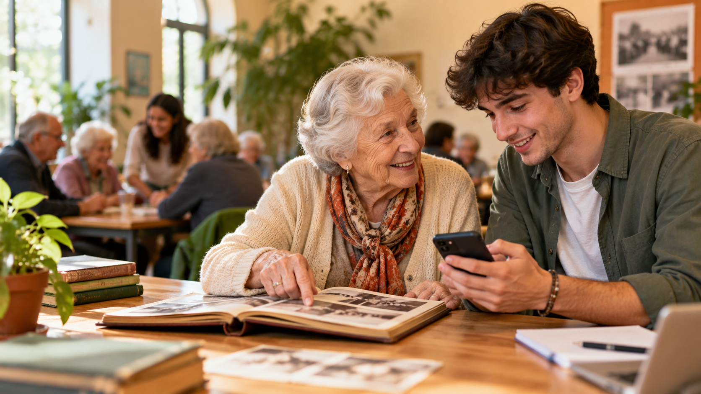

Proposta progettuale · Aprilia
In fase di ideazione e ricerca fondiAprilia si racconta
Dove il futuro digitale incontra la memoria delle persone.

Immagine originale generata per il sito, rappresentazione illustrativa e non documentazione di attività svolte.
Stato effettivo della proposta
Aprilia si racconta è una proposta progettuale in fase di sviluppo e ricerca di finanziamenti. Non è un progetto approvato, finanziato o avviato. Le attività descritte potranno essere realizzate soltanto dopo la disponibilità delle risorse necessarie e la definizione degli accordi pertinenti.
Non vengono dichiarati finanziamenti europei concessi, patrocini ottenuti, convenzioni attive o partenariati formalmente confermati. Scuole, enti pubblici, servizi sanitari e altri soggetti sono possibili interlocutori, non partner acquisiti.
Un patto tra generazioni
I giovani insegnano
Uso di smartphone, messaggistica, SPID, app IO, servizi sanitari digitali e accesso consapevole alle applicazioni, senza mai richiedere o conservare password personali.
Gli anziani raccontano
Esperienze di lavoro, trasformazioni della città, memorie familiari e conoscenze pratiche, attraverso incontri e interviste volontarie.
I professionisti accompagnano
Un coordinatore, un formatore digitale e figure educative specializzate da selezionare e contrattualizzare secondo il budget e le regole del finanziamento.
Il progetto non è ancora avviato. Le attività, le assunzioni e i partenariati descritti sono proposte da definire e subordinare alle risorse disponibili.